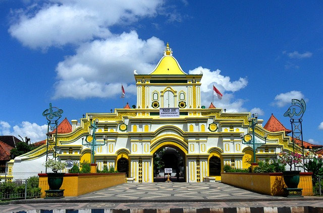

Profil Kota Sumenep
Sumenep memiliki semboyan “Sumekar”, akronim dari “Sumenep Karaton”, karena semenjak dahulu wilayah ini terdapat puluhan Keraton/Istana sebagai pusat pemerintahan sang Adipati. Untuk kepentingan pemasaran pariwisata, Sumenep mempunyai branding wisata “Sumenep The Heart Purity”, julukan tersebut didasarkan pada tingkah pola masyarakatnya yang selalu menjunjung tinggi tata krama serta keramahan kepada setiap tamunya maupun kondisi geografis alamnya yang selalu memberikan keramahan dan kenyamanan bagi setiap wisatawan.
Kota Sumenep juga dikenal dengan sebutan Bumi Sumekar. Selain itu beberapa pulau di Sumenep juga ada julukannya tersendiri, semisal Kepulauan Kapajang untuk gabungan dari nama Pulau Kangean, Paleat, dan Sepanjang, karena di pulau-pulau inilah taman-taman laut berupa terumbu karang dan kehidupan laut lainnya berkembang pesat. Selain itu Pulau Kangean juga lebih dikenal dengan sebutan Pulau Cukir, karena di wilayah inilah fauna khas Sumenep berupa ayam bekisar banyak dikembangkan. Sekarang hewan unggas ini menjadi maskot Sumenep dan juga Provinsi Jawa Timur.